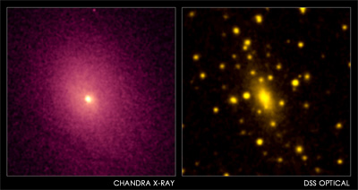
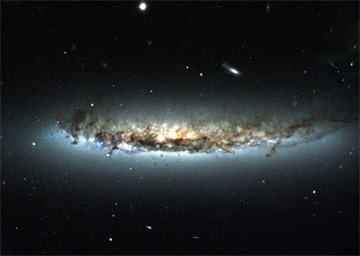

| Galaxies are not generally found in isolation and most comprise part of larger, self-gravitating collections called groups or clusters. While galaxy groups consist of anywhere between two and a hundred luminous galaxies, clusters typically contain a few hundred to several thousand galaxies. Clusters grow through the infall of individual galaxies or groups of galaxies, and most clusters harbour a bright elliptical galaxy at their centre. Known as a brightest cluster galaxy, this is generally cD galaxy possesses a diffuse outer stellar halo. This extended halo is thought to form as smaller galaxies plunge into the cluster centre and merge with this central galaxy. |

Credit: NASA/CXC/UCI/A.Lewis et al. Optical: Pal.Obs. DSS.
Optical images of galaxy clusters reveal individual galaxies separated by ‘empty space’. X-ray images, however, reveal that this space is usually pervaded by a hot, X-ray emitting gas with a temperature between 1 and 100 million Kelvin. This is known as the intra-cluster medium and in large clusters it may contain more baryonic matter than all of the galaxies in the cluster put together. The continued existence of this intra-cluster medium indicates that galaxy clusters contain large amounts of dark matter (thought to be distributed in a dark halo surrounding the cluster) as there is insufficient luminous material in the cluster to retain this high-temperature gas.

Credit: H.Crowl (Yale University) and WIYN/NOAO/AURA/NSF
Given the high concentration of galaxies in clusters, interactions between galaxies are not uncommon. However, due to the fast motions of galaxies orbiting in clusters (~500 km/s), galaxy mergers are rare, and most encounters occur as high speed fly-bys (often called harassment).
Interactions between individual cluster galaxies and the cluster environment also occur. Tidal effects may allow gas to escape from a galaxy falling into the cluster for the first time in a process known as strangulation. Alternatively, the gas of a galaxy moving within its cluster may be removed through interaction with the intra-cluster medium. This is known as ram pressure stripping. These are two of the processes invoked to explain the morphology density relation – the observation that clusters show a disproportionately high fraction of early-type (elliptical galaxy and S0 galaxies) galaxies and relatively few spiral galaxies when compared to galaxy groups and isolated galaxies.
The nearest major clusters to the Local Group are the Virgo and Coma clusters.